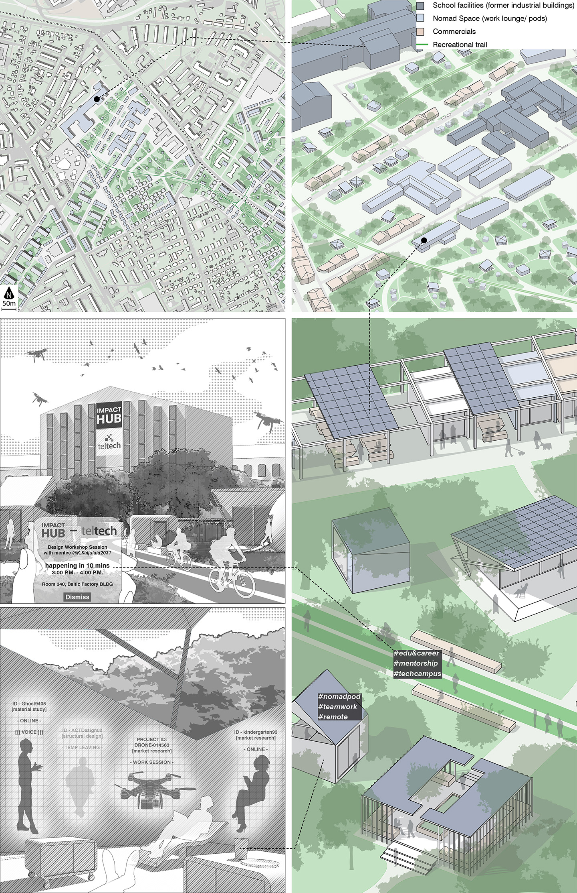
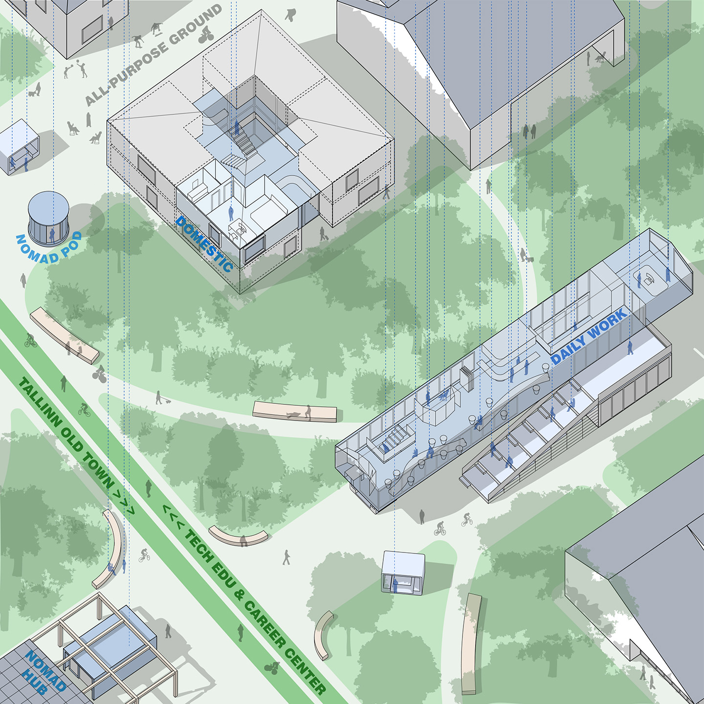

A CITY OF PLACELESSNESS
Digital Nomads and Tallinn's Urban Futures
Placelessness describes a state of people and activities that are not confined to fixed places. It directly correlates to digital nomads:
people who utilize remote work and personal mobility to avoid restrictions of fixed places in their living. Digital nomads represent
a borderless workforce with potentials of growing into a placeless population under future technologies and further public engagements
on digital work. My SMArcS Urbanism thesis takes digital nomads as a stimulus to explore the potentials of placelessness in shaping alternative urban futures.
As part of the thesis, I developed an experimental design proposal to transform a former industrial site of Tallinn into a work-live community
where placeless people become part of the local society during their transient stays.
The project speculates future urban impacts of a placeless population in Tallinn based on the emerging digital nomad community in the city
and Estonia’s political visions to incorporate digital nomads into a tech-based economy. The project takes urbanist approaches to accommodate
an alternative work-live habits informed by digital nomads while linking this placeless population with the local people in public life and
economic activities. This portfolio shows part of the proposal through a story of a future nomad who traveled to Tallinn in summer 2040.
[Thesis advisor: Prof. Rafi Segal, MIT Architecture; Reader: Prof. Brent Ryan, MIT DUSP]
 The digital-nomad shifts of work-live habits and the placeless urban experience
The digital-nomad shifts of work-live habits and the placeless urban experience
 The dissolution of urban programs and typologies in supporting placeless activities
The dissolution of urban programs and typologies in supporting placeless activities
Tallinn - A Future Urban Ground of Placeless Population
Estonia has been developing a borderless digital nation under e-Estonia movements which promote digital work for a tech-driven economy. E-Estonia program encourages international tech workers, including digital nomads, to contribute their innovations and workforce into local tech industries through visa benefits with access to a variety of public services. These visions also informs a potential population of placeless people to be added to Tallinn’s future identity. Their flexible forms of residency and work-live-habits under digital connectivity will challenge the existing paradigms of urban life and social structures.

A Demonstrative Design
The design situates on a brownfield in Northern Tallinn. This 1.2km2 urban void consists multiple large-scale industrial complexes surrounding the former Kopli Freight Station. It qualifies as a promising site to accommodate future placeless people for its coexisting conditions space availability, people and industrial accessibility, and most importantly, the socio-spatial challenges faced by local people where a placeless population can be introduced as a driver to alternative solutions.
 The urban nexus of digital nomadism in Tallinn
The urban nexus of digital nomadism in Tallinn
 Site conditions
Site conditions
The design adds new live-work paradigms to the local identities of residential neighborhoods while seeking to revitalize the industrial marks of the site through
industry 4.0 developments under the collaboration of local tech business and digital nomads from all over the world. Given the enormous scale of the site and
the intricate socio-economic conditions of the local society, the masterplan establishes 3 hierarchies of space in cope with different aspects of the overall visions:
- revitalize local industrial identity through placeless workforce under industry 4.0;
- encourage digital nomads to participate in remediating the employments faced by local people;
- accommodate flexible live-work habits of placeless people as informed by digital nomads
 Design strategies and potential stakeholders
Design strategies and potential stakeholders

Public Ground: Nomad x Nomad
 Industrial 4.0 Park
Industrial 4.0 Park
 Baltic Station Nomad Center
Baltic Station Nomad Center
Intermediate Ground: Nomad x Local
Tallinn Tech Education & Career CampusCommunity Ground: Nomad -> Local
Live-Work Clusters